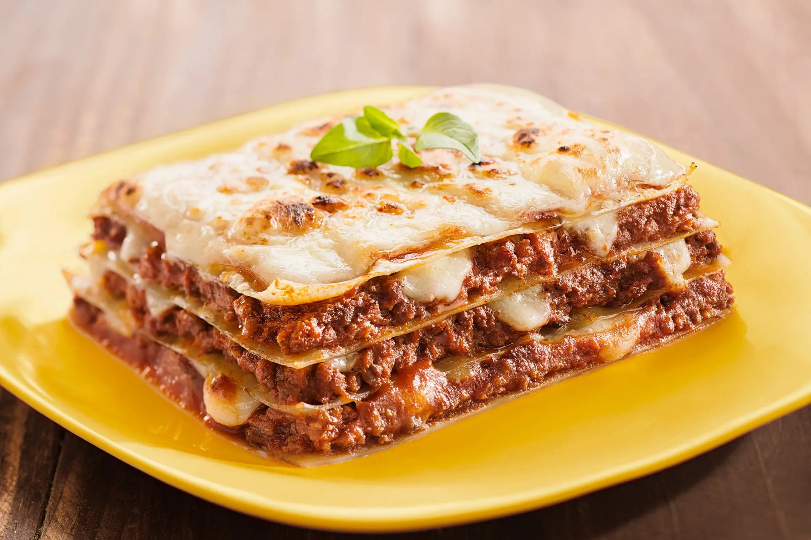

Bolo de Chocolate
Ingredientes:
- 2 xícaras de farinha de trigo
- 2 colheres de sopa de cacau em pó
- 2 ovos
- 1 xícara de açúcar
- 1 xícara de leite
- 1/2 xícara de óleo
Modo de Preparo:
- Preaqueça o forno a 180°C.
- Em um bowl, misture a farinha, o cacau, os ovos, o açúcar, o leite e o óleo.
- Despeje a massa em uma forma untada e leve ao forno por 40 minutos.
- Deixe esfriar e sirva.

Lasanha de Carne
Ingredientes:
- 500g de massa de lasanha
- 500g de carne moída
- 1 cebola picada
- 3 dentes de alho picados
- 1 lata de molho de tomate
- 2 xícaras de mussarela ralada
Modo de Preparo:
- Cozinhe o carne.
- Em uma panela, refogue a cebola e o alho.
- Adicione a carne e o molho de tomate. Tempere a gosto.
- Monte a lasanha intercalando a massa, o molho e a mussarela.
- Asse por 30 minutos a 180°C.

Salada de Frutas
Ingredientes:
- 2 maçãs
- 2 bananas
- 2 laranjas
- 1 abacaxi
- 1 copo de iogurte natural
- 1 colher de sopa de mel
Modo de Preparo:
- Lave, descasque e pique todas as frutas.
- Em uma tigela, misture as frutas picadas.
- Adicione o iogurte e o mel. Misture delicadamente.
- Sirva gelado.